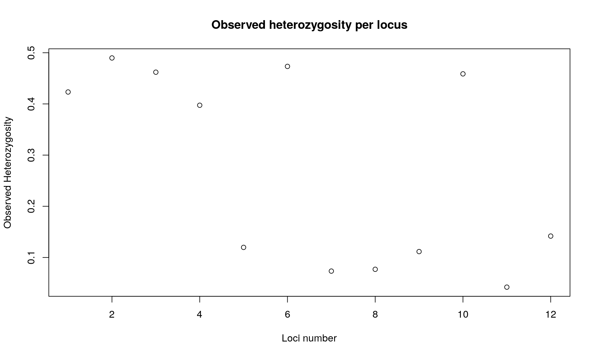
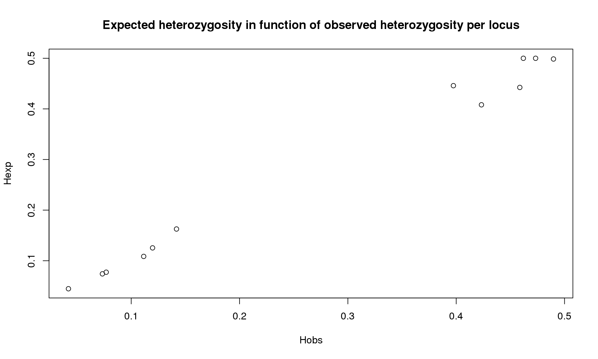
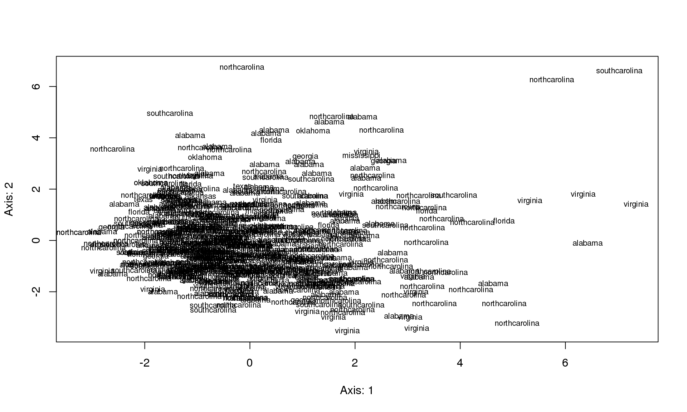

In this vignette, you will calculate basic population genetic statistics from SNP data using R packages. These statistics serve as exploratory analysis and require to work at the population level. We will calculate:
The dataset used for these analyses are for lodgepole pine (Pinus contorta, Pinaceae), a plant species. More information on the dataset and the species is available from A. Eckert’s website. Here we use the dataset with no presupposed idea of interpreting the results in a biological way. To make the calculations faster, we work only with a subset of the full dataset.
library(adegenet)
library(hierfstat)
library(pegas)
library(genetics)The data are stored in a text file (genotype=AA..). We will import the dataset into R as a data frame, and then convert the SNP data file into a genind object.
The dataset “Master_Pinus_data_genotype.txt” can be downloaded here.
The text file is a matrix of (550 rows x 3086 columns). It contains 4 extra columns: first column is the label of the individuals, the three other are description of the region, all the other columns are for the genotypes as (AA or AT…).
When you import the data into R, the data file needs to be in your working directory, or adjust the path in the read.table() invocation below accordingly.
Mydata <- read.table("Master_Pinus_data_genotype.txt", header = TRUE)
dim(Mydata) # Matrix of dimension 550x3086## [1] 550 3086To work with the data, we need to convert the R object returned by read.table() to a genind object. To achieve this, we create a matrix with only genotypes, and keep only a subset of the first 11 SNP loci (to make calculations faster). The result can then be converted to a genind object (for package adegent). The genind object can then easily be converted into fstat (package hierfstat) and loci objects (package pegas).
locus <- Mydata[, -c(1,2,3,4,17:3086)]
colnames(locus) <- gsub("\\.", "_", colnames(locus)) # locus names can't have "."
ind <- as.character(Mydata$tree_id) # labels of the individuals
population <- as.character(Mydata$state) # labels of the populations
Mydata1 <- df2genind(locus, ploidy=2, ind.names=ind, pop=population, sep="")
Mydata1## /// GENIND OBJECT /////////
##
## // 550 individuals; 12 loci; 24 alleles; size: 97.5 Kb
##
## // Basic content
## @tab: 550 x 24 matrix of allele counts
## @loc.n.all: number of alleles per locus (range: 2-2)
## @loc.fac: locus factor for the 24 columns of @tab
## @all.names: list of allele names for each locus
## @ploidy: ploidy of each individual (range: 2-2)
## @type: codom
## @call: df2genind(X = locus, sep = "", ind.names = ind, pop = population,
## ploidy = 2)
##
## // Optional content
## @pop: population of each individual (group size range: 4-177)nAll(Mydata1)## X0_10037_01_257 X0_10040_02_394 X0_10044_01_392 X0_10048_01_60
## 2 2 2 2
## X0_10051_02_166 X0_10054_01_402 X0_10067_03_111 X0_10079_02_168
## 2 2 2 2
## X0_10112_01_169 X0_10113_01_119 X0_10116_01_165 X0_10151_01_86
## 2 2 2 2Mydata2 <- genind2hierfstat(Mydata1)
Mydata3 <- genind2loci(Mydata1)with adegenet
div <- summary(Mydata1)##
## # Total number of genotypes: 550
##
## # Population sample sizes:
## alabama arkansas florida georgia louisiana
## 169 10 24 10 4
## mississippi northcarolina oklahoma southcarolina texas
## 9 177 7 58 9
## virginia
## 73
##
## # Number of alleles per locus:
## X0_10037_01_257 X0_10040_02_394 X0_10044_01_392 X0_10048_01_60
## 2 2 2 2
## X0_10051_02_166 X0_10054_01_402 X0_10067_03_111 X0_10079_02_168
## 2 2 2 2
## X0_10112_01_169 X0_10113_01_119 X0_10116_01_165 X0_10151_01_86
## 2 2 2 2
##
## # Number of alleles per population:
## alabama arkansas florida georgia louisiana
## 24 19 23 22 18
## mississippi northcarolina oklahoma southcarolina texas
## 21 24 20 23 19
## virginia
## 24
##
## # Percentage of missing data:
## [1] 1.621212
##
## # Observed heterozygosity:
## X0_10037_01_257 X0_10040_02_394 X0_10044_01_392 X0_10048_01_60
## 0.42329020 0.48979592 0.46198830 0.39741220
## X0_10051_02_166 X0_10054_01_402 X0_10067_03_111 X0_10079_02_168
## 0.11970534 0.47329650 0.07339450 0.07692308
## X0_10112_01_169 X0_10113_01_119 X0_10116_01_165 X0_10151_01_86
## 0.11151737 0.45871560 0.04204753 0.14180479
##
## # Expected heterozygosity:
## X0_10037_01_257 X0_10040_02_394 X0_10044_01_392 X0_10048_01_60
## 0.40805006 0.49855260 0.49996960 0.44587281
## X0_10051_02_166 X0_10054_01_402 X0_10067_03_111 X0_10079_02_168
## 0.12540148 0.49997287 0.07409477 0.07733902
## X0_10112_01_169 X0_10113_01_119 X0_10116_01_165 X0_10151_01_86
## 0.10854119 0.44238700 0.04465942 0.16268158div## $N
## [1] 550
##
## $pop.eff
## alabama arkansas florida georgia louisiana
## 169 10 24 10 4
## mississippi northcarolina oklahoma southcarolina texas
## 9 177 7 58 9
## virginia
## 73
##
## $loc.n.all
## X0_10037_01_257 X0_10040_02_394 X0_10044_01_392 X0_10048_01_60
## 2 2 2 2
## X0_10051_02_166 X0_10054_01_402 X0_10067_03_111 X0_10079_02_168
## 2 2 2 2
## X0_10112_01_169 X0_10113_01_119 X0_10116_01_165 X0_10151_01_86
## 2 2 2 2
##
## $pop.nall
## alabama arkansas florida georgia louisiana
## 24 19 23 22 18
## mississippi northcarolina oklahoma southcarolina texas
## 21 24 20 23 19
## virginia
## 24
##
## $NA.perc
## [1] 1.621212
##
## $Hobs
## X0_10037_01_257 X0_10040_02_394 X0_10044_01_392 X0_10048_01_60
## 0.42329020 0.48979592 0.46198830 0.39741220
## X0_10051_02_166 X0_10054_01_402 X0_10067_03_111 X0_10079_02_168
## 0.11970534 0.47329650 0.07339450 0.07692308
## X0_10112_01_169 X0_10113_01_119 X0_10116_01_165 X0_10151_01_86
## 0.11151737 0.45871560 0.04204753 0.14180479
##
## $Hexp
## X0_10037_01_257 X0_10040_02_394 X0_10044_01_392 X0_10048_01_60
## 0.40805006 0.49855260 0.49996960 0.44587281
## X0_10051_02_166 X0_10054_01_402 X0_10067_03_111 X0_10079_02_168
## 0.12540148 0.49997287 0.07409477 0.07733902
## X0_10112_01_169 X0_10113_01_119 X0_10116_01_165 X0_10151_01_86
## 0.10854119 0.44238700 0.04465942 0.16268158names(div)## [1] "N" "pop.eff" "loc.n.all" "pop.nall" "NA.perc" "Hobs"
## [7] "Hexp"plot(div$Hobs, xlab="Loci number", ylab="Observed Heterozygosity",
main="Observed heterozygosity per locus")
plot(div$Hobs,div$Hexp, xlab="Hobs", ylab="Hexp",
main="Expected heterozygosity in function of observed heterozygosity per locus")
bartlett.test(list(div$Hexp, div$Hobs)) # a test : H0: Hexp = Hobs##
## Bartlett test of homogeneity of variances
##
## data: list(div$Hexp, div$Hobs)
## Bartlett's K-squared = 0.011457, df = 1, p-value = 0.9148We observed that heterozygosity varies among loci. We observed no difference between expected and observed heterozygosity.
Basic statistics with hierfstat. Populations are states. The function basicstat provides the observed heterozygosity (\(H_o\)), mean gene diversities within population (\(H_s\)), \(F_{is}\), and \(F_{st}\) The function boot.ppfis provides confidence interval for \(F_{is}\) The fuction indpca does an PCA on the centered matrix of individual’s allele frequencies.
basicstat <- basic.stats(Mydata2, diploid = TRUE, digits = 2)
names(basicstat) ## [1] "n.ind.samp" "pop.freq" "Ho" "Hs" "Fis"
## [6] "perloc" "overall"boot.ppfis(Mydata2) ## $call
## boot.ppfis(dat = Mydata2)
##
## $fis.ci
## ll hl
## 1 -0.0318 0.0851
## 2 -0.2756 0.1473
## 3 -0.2071 -0.0677
## 4 -0.0797 0.2902
## 5 -0.4348 -0.1249
## 6 -0.1349 0.4061
## 7 0.0145 0.0916
## 8 -0.5336 0.2135
## 9 -0.0540 0.0795
## 10 0.0053 0.3496
## 11 -0.0516 0.0398x <- indpca(Mydata2)
plot(x, cex=0.7)
We used the pegas package.
hw.test(Mydata3, B = 1000)## chi^2 df Pr(chi^2 >) Pr.exact
## X0_10037_01_257 0.75465490 1 0.385006451 0.454
## X0_10040_02_394 0.16628227 1 0.683437231 0.730
## X0_10044_01_392 2.96053195 1 0.085319867 0.090
## X0_10048_01_60 6.39076800 1 0.011471539 0.020
## X0_10051_02_166 1.12035389 1 0.289842265 0.322
## X0_10054_01_402 1.54582494 1 0.213752853 0.223
## X0_10067_03_111 0.04868128 1 0.825374035 0.541
## X0_10079_02_168 0.01579313 1 0.899992594 0.580
## X0_10112_01_169 0.41126025 1 0.521330544 1.000
## X0_10113_01_119 0.74248768 1 0.388865151 0.435
## X0_10116_01_165 1.87098306 1 0.171362531 0.241
## X0_10151_01_86 8.94232481 1 0.002786379 0.006We get for each locus a test of significance of the null hypothesis: \(H_0\) the locus is in HW equilibrium in the population. All but one locus are in HW equilibrium.
In this vignette, we learned how to explore the patterns of genetic diversity and how to estimate the level of genetic differentiation in one population. Also, you have an idea of potential violations of the dataset to the null Wright-Fischer model.
You may now want to move into looking into population differentiation in more detail (See Calculating genetic differentiation and clustering methods from SNP data)
Eckert, A. J., A. D. Bower, S. C. González-Martínez, J. L. Wegrzyn, G. Coop and D. B. Neale. 2010. Back to nature: Ecological genomics of loblolly pine (Pinus taeda, Pinaceae). Molecular Ecology 19: 3789-3805. doi:[10.1111/j.1365-294X.2010.04698.x](http://dx.doi.org/10.1111/j.1365-294X.2010.04698.x)
This shows us useful information for reproducibility. Of particular importance are the versions of R and the packages used to create this workflow. It is considered good practice to record this information with every analysis.
options(width = 100)
devtools::session_info()## Session info ---------------------------------------------------------------------------------------## setting value
## version R version 3.2.3 RC (2015-12-03 r69731)
## system x86_64, linux-gnu
## ui X11
## language (EN)
## collate en_US.UTF-8
## tz <NA>
## date 2015-12-16## Packages -------------------------------------------------------------------------------------------## package * version date source
## ade4 * 1.7-3 2015-11-22 CRAN (R 3.2.3)
## adegenet * 2.0.0 2015-07-07 CRAN (R 3.2.3)
## ape * 3.4 2015-11-29 CRAN (R 3.2.3)
## assertthat 0.1 2013-12-06 CRAN (R 3.2.3)
## boot 1.3-17 2015-06-29 CRAN (R 3.2.1)
## coda 0.18-1 2015-10-16 CRAN (R 3.2.3)
## colorspace 1.2-6 2015-03-11 CRAN (R 3.2.3)
## combinat * 0.0-8 2012-10-29 CRAN (R 3.2.3)
## DBI 0.3.1 2014-09-24 CRAN (R 3.2.3)
## deldir 0.1-9 2015-03-09 CRAN (R 3.2.3)
## devtools 1.9.1 2015-09-11 CRAN (R 3.2.3)
## digest 0.6.8 2014-12-31 CRAN (R 3.2.3)
## dplyr 0.4.3 2015-09-01 CRAN (R 3.2.3)
## evaluate 0.8 2015-09-18 CRAN (R 3.2.3)
## formatR 1.2.1 2015-09-18 CRAN (R 3.2.3)
## gdata * 2.17.0 2015-07-04 CRAN (R 3.2.3)
## genetics * 1.3.8.1 2013-09-03 CRAN (R 3.2.3)
## ggplot2 1.0.1 2015-03-17 CRAN (R 3.2.3)
## gtable 0.1.2 2012-12-05 CRAN (R 3.2.3)
## gtools * 3.5.0 2015-05-29 CRAN (R 3.2.3)
## hierfstat * 0.04-22 2015-12-04 CRAN (R 3.2.3)
## htmltools 0.2.6 2014-09-08 CRAN (R 3.2.3)
## httpuv 1.3.3 2015-08-04 CRAN (R 3.2.3)
## igraph 1.0.1 2015-06-26 CRAN (R 3.2.3)
## knitr 1.11 2015-08-14 CRAN (R 3.2.3)
## lattice 0.20-33 2015-07-14 CRAN (R 3.2.3)
## LearnBayes 2.15 2014-05-29 CRAN (R 3.2.3)
## magrittr 1.5 2014-11-22 CRAN (R 3.2.3)
## MASS * 7.3-45 2015-11-10 CRAN (R 3.2.3)
## Matrix 1.2-3 2015-11-28 CRAN (R 3.2.2)
## memoise 0.2.1 2014-04-22 CRAN (R 3.2.3)
## mime 0.4 2015-09-03 CRAN (R 3.2.3)
## munsell 0.4.2 2013-07-11 CRAN (R 3.2.3)
## mvtnorm * 1.0-3 2015-07-22 CRAN (R 3.2.3)
## nlme 3.1-122 2015-08-19 CRAN (R 3.2.3)
## pegas * 0.8-2 2015-09-25 CRAN (R 3.2.3)
## plyr 1.8.3 2015-06-12 CRAN (R 3.2.3)
## proto 0.3-10 2012-12-22 CRAN (R 3.2.3)
## R6 2.1.1 2015-08-19 CRAN (R 3.2.3)
## Rcpp 0.12.2 2015-11-15 CRAN (R 3.2.3)
## reshape2 1.4.1 2014-12-06 CRAN (R 3.2.3)
## rmarkdown 0.8.1 2015-10-10 CRAN (R 3.2.3)
## scales 0.3.0 2015-08-25 CRAN (R 3.2.3)
## seqinr 3.1-3 2014-12-17 CRAN (R 3.2.3)
## shiny 0.12.2 2015-08-05 CRAN (R 3.2.3)
## sp 1.2-1 2015-10-18 CRAN (R 3.2.3)
## spdep 0.5-88 2015-03-17 CRAN (R 3.2.3)
## stringi 1.0-1 2015-10-22 CRAN (R 3.2.3)
## stringr 1.0.0 2015-04-30 CRAN (R 3.2.3)
## xtable 1.8-0 2015-11-02 CRAN (R 3.2.3)
## yaml 2.1.13 2014-06-12 CRAN (R 3.2.3)